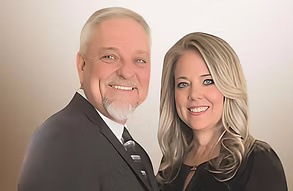

Restoration Church is a community of believers devoted to experiencing the transformative power of God's love. Our mission is to bring hope, healing, and restoration to individuals and families, guided by the teachings of Jesus Christ. Join us in our journey to make a lasting impact and spread the message of hope and salvation.
Pastors Brian and Phaedra Alton

Apostle Dr. Brian Alton has devoted his life to advancing the Kingdom of God through the faithful preaching of the Gospel of Jesus Christ, empowering the Church to transform culture by the power of the Holy Spirit, and reaching the world through intentional evangelism. He is widely recognized for his strong prophetic and psalmist anointing and serves as a gifted singer, songwriter, musician, television and radio host, respected conference speaker, and bestselling author.
Following a fruitful and impactful tenure in ministry, Apostle Brian heard the voice of the Lord once again ask, "Would you do it all again for Me?" With unwavering obedience and renewed vision, he responded with a wholehearted yes. This divine encounter led to the founding of Restoration Church International, established with the faithful support of Pastors David and Jennifer Foster.
Together with his wife, Pastor Phaedra, Apostle Brian Alton serves with a deep commitment to seeing lives transformed through the presence and power of God. Their vision for Restoration Church International is to create a place where individuals can encounter the tangible presence of God, experience true spiritual freedom, discover their God-given purpose, and be equipped to make a lasting impact in the world. They believe we are in a divinely appointed season—a Golden Age of Restoration—where God is rebuilding the Tabernacle of David: a church marked by praise, intimacy, and spiritual renewal. It is their sincere desire that Restoration Church International be a refuge for those seeking healing, belonging, and revival.
Apostle Brian and Pastor Phaedra reside in Waddell, Arizona. They are the proud parents of three children: Brian Jr. (married to Naomi), Michael David, and Abigail Rose. They are also joyfully known as “Papaw” and “Mimi” to their beloved grandchildren, Elisha Andrew and Eliana Faith.
Pastors David and Jennifer Foster

David and Jennifer live in Surprise Arizona with their two Golden-doodles, Mercy and Grace. They are the proud parents of seven children and five grandchildren with two more on the way in 2025. They enjoy camping in the White Mountains, fishing and being outdoors in Gods beautiful creation. David and Jennifer share a passion to serve Jesus and His calling on their lives. In late 2024 while living in Payson Arizona, God begin to move on their hearts to relocate to the Metro-Phoenix area to plant a new Church. After much prayer and seeking the Lord, it was clear, God was leading them to the West Valley, to partner with Apostle Brian Alton and his wife Phaedra to establish Restoration Church International.
David and Jennifer believe in the Great Commission given by Jesus in Matthew 28, go into all the world and preach the Gospel Message. They also believe this is a season of spiritual renewal in America and the nations, which will be known as the Golden Age of Restoration.